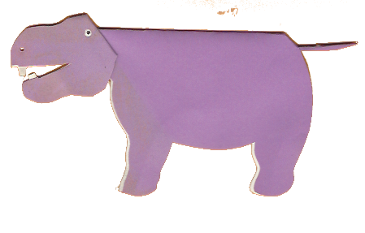

In Memory of
Robin Goodfellow
Musician, Artist, Educator, Performer, Designer, ...
1940-2017
→ Front Page
→ The Cuttings Index page
→ Saint Patrick's day

download folded hippo png
The hippo is a two layer construction, but is glued at the nose and front of the jaw, so it could not be displayed splayed out to reveal the details of construction.